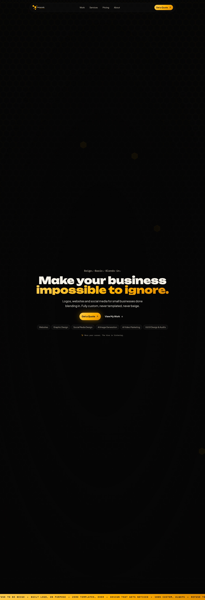

Honeycode Design Studio
My studio's website. It shows its prices up front, and it won three paying clients in its first ten weeks.
The briefSmall businesses can't tell one designer from the next
Before this build, honeycodedesign.com was a coming-soon page. My clients are small South African businesses who need a logo, a website or social media, and they're spoilt for cheap templates. Most can't tell one designer from the next, and most are scared of the surprise invoice.
The studio needed a site that sells on its own. It had to say what Honeycode stands for, show the work, and tell a small-business owner what things cost before they have to ask.
ConstraintsWhat I had to work with
- One person. I design for clients while running the studio, so the site had to bring in enquiries without a sales team.
- A price-sensitive audience. Small-business owners who are wary of agencies and budget in rand.
- Found through search. Local search is how most of them look for a designer, so every page had to be readable by search engines.
- Low running costs. Hosting on Cloudflare, with form notifications through Resend.
My roleDesign, copy and build
I wrote the positioning and every line of copy, created the brand palette and design system in Figma, designed every page from it, and built the site in React and Tailwind CSS with Claude Code. I directed and reviewed each change. No agency, no developer. The repository has 48 commits between 7 September and 15 October 2026, because the site kept changing as I learned what clients asked about.
ProcessPositioning first, pages second
I wrote the manifesto before I designed a screen. "Refuse to be beige" became the test for every decision: if a section could sit on any other studio's site, it was cut or rewritten.
After launch I kept editing in the open. I repriced services in rand only and led with entry prices. I added AI image and video services as clients asked for them. On 2 October I removed four UI/UX audits from the work section, so it leads with live client sites and complete brand systems.
Timeline
- Manifesto"Refuse to be beige" written as the test for every decision
- Design systemBrand palette and components in Figma
- PagesEvery page designed from the system
- Build and launchReact and Tailwind on Cloudflare
- Edit the workFour UI/UX audits removed so live client work leads
- New homepageThe live hive replaces the first hero
Sitemap
Key flow: from price to enquiry
Key decisionsThree decisions
Show the prices on the page
- Considered
- Rejected"Contact us for a quote" with no prices, the norm for design studios.
- Chose
- Published ZAR entry prices for every service, from logos at R 1 950 to Starter websites from R 3 500. Each pricing card pre-selects its package in the quote form.
- Why
- The surprise invoice is my clients' biggest fear. Showing prices filters out mismatched enquiries before anyone fills in a form, and makes the quote form a next step instead of a gamble.
A voice that picks a fight with beige
- Chose
- The hero opens with "Beige. Basic. Blends in." struck through, then "Make your business impossible to ignore." A ticker repeats the promises: zero templates, 100% custom.
- Why
- Small-business owners skim. A strike-through says what the studio is against in three words, and the headline says what they get.
A live hive instead of a stock hero
- Chose
- A honeycomb field behind the hero that reacts to the cursor, in black and honey taken from my illustrated portrait. It replaced the first homepage on 15 October.
- Why
- The name already does the branding work. The hive makes the first five seconds feel made by hand, which is the whole argument against templates.
The workThe live site

ResultsTen weeks live
- Three paying clients came through the site: BrokerEdge, Seven Seas Liquor and Get Strong.
- A handful of quote and callback requests in the first ten weeks, from a site that replaced a coming-soon page.
Lighthouse, desktop, 17 November 2026:
ReflectionWhat I'd do next
Mobile is the weak spot. On a phone, the live hive delays the hero by about six seconds, and mobile performance scores 62. Next I'd show a still hive on phones and keep the animated one for desktop. I'd also fix the contrast warnings Lighthouse flagged, and set up analytics from day one, so the next version of this case study can show visit-to-enquiry rates instead of a count.
Next case study